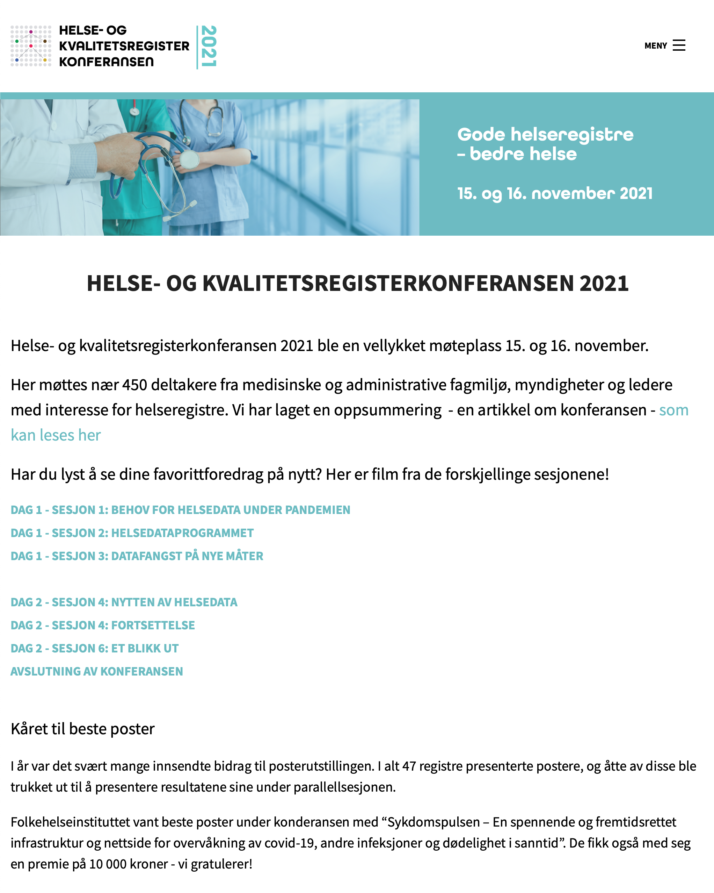

A collection of thoughts.
“org” is a system to help you organize projects. Most analyses have three (or more) main sections: code, results, and data, each with different requirements (version control/sharing/encryption). You provide folder locations and ‘org’ helps you take care of the details.
Airflow is a platform to programmatically author, schedule, and monitor workflows data. Operators are the main building blocks that encapsulate logic to do a unit of work. We have created a custom Airflow operator that 1) checks a remote YAML file and 2) then takes a decision to do one of two actions. This allows us to create a “poor-man’s Kubernetes”.
“plnr” is a system to plan analyses within the mental model where you have one (or more) datasets and want to run either A) the same function multiple times with different arguments, or B) multiple functions. This is appropriate when you have multiple strata (e.g. locations, age groups) that you want to apply the same function to, or you have multiple variables (e.g. exposures) that you want to apply the same statistical method to, or when you are creating the output for a report and you need multiple different tables or graphs.

Sykdomspulsen received the prize for best poster at Helse- og Kvalitetsregisterkonferansen 2021.